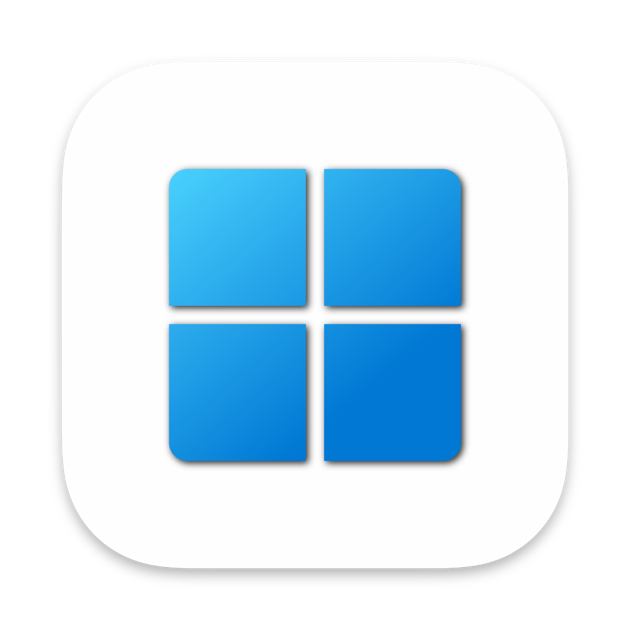
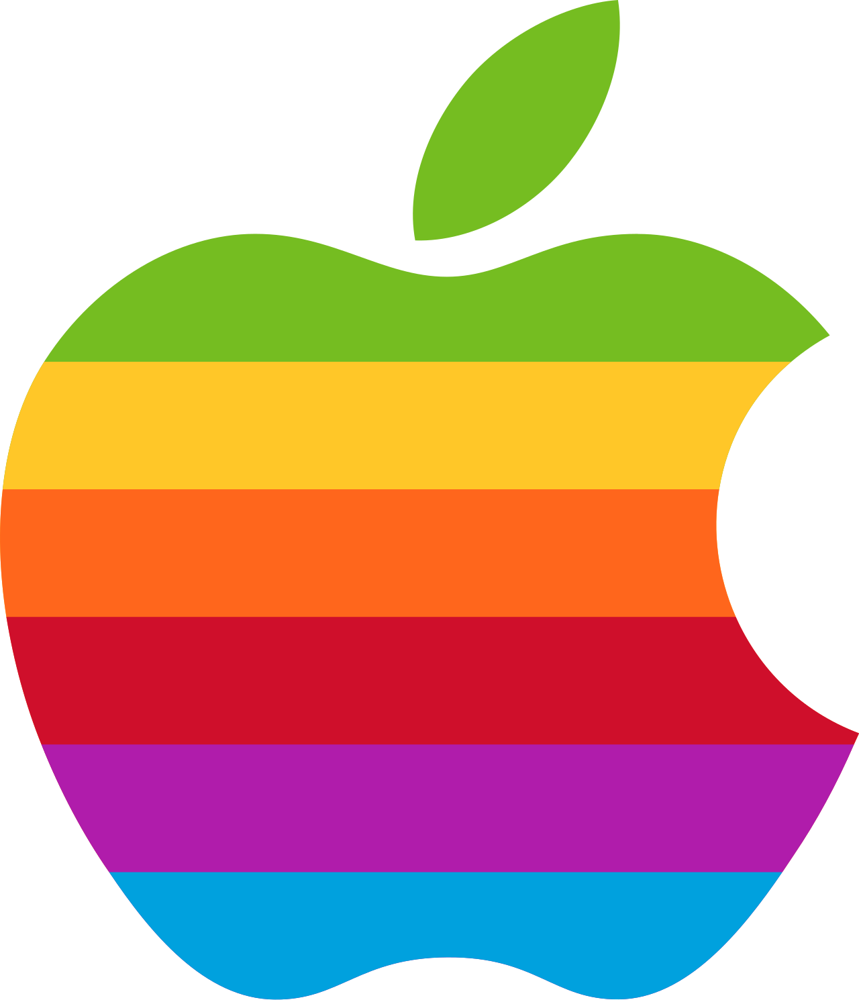

Harmonic mixing, energy curves, and AI-powered track selection — all from your existing music library.
Tracks in compatible keys sound smooth together. DJFriend scores every transition and picks the best fit automatically.
Draw a curve showing how energy should build and drop. DJFriend matches the right track to each moment.
Every track can be swapped, reordered, or removed. The generator is a starting point, not a final answer.
No account required. No subscription. Free.


Click Analyze in the top-right corner. Four ways to bring in your library:
Open Settings (⚙), set your Music Folder, then click Analyze → Folder. DJFriend reads BPM, key, and energy from every track.
Mac + WindowsClick Analyze → Apple Music and pick a playlist. Uses your existing Apple Music library — no export needed.
Mac onlyClick Analyze → Import M3U / TXT and pick any .m3u, .m3u8, or .txt file with track paths. Works with exports from Rekordbox, Serato, and others.
Mac + WindowsIn Rekordbox: File → Export Collection in xml format. Then Analyze → Import Rekordbox XML. Your BPM and key data from Rekordbox are used directly — no re-analysis needed.
Mac + WindowsThree quick setup steps, then hit Generate.
The Energy Curve editor shows 5 draggable handles across your set timeline — from the first track to the last. Drag handles up for high-energy moments, down for low.
Use a preset to start: Build-up, Peak, Steady, Valley, or W-shape.
Choose how many minutes your set should run (30 – 180 min). Optionally open Filters to narrow by genre, vibe, mood, venue type, time of night, or vocal style. Only tags found in your library appear.
Click Generate. DJFriend builds a tracklist optimized for harmonic flow, BPM continuity, and your energy curve.
From here: drag rows to reorder · click ⚠ to fix a key clash · click the swap icon to browse alternatives · hit Regenerate for a different shuffle · hit Generate New to extend the set with unused tracks.
Get your set into your DJ software or onto Spotify.
Click Export → Save M3U. The playlist file is saved to your Playlists folder (set in Settings). Load it directly in Rekordbox, Serato, or any other DJ software.
Click Export → Create Spotify Playlist. Authorize with your Spotify account — DJFriend creates a new playlist there automatically.
Every set you generate is saved automatically. Load any past set back into the generator, rename it, or export it again as M3U or Spotify.
Paste any Spotify playlist URL to see which tracks you already own in your library — and which ones you're still missing.
Open Settings with the ⚙ icon in the top-right corner.
| Setting | What it does |
|---|---|
| Music Folder | The folder DJFriend scans for audio files when using Analyze → Folder. |
| Playlists Folder | Where exported M3U files are saved. |
| Groq API Key | Optional. Enables AI-generated tags — vibe, mood, and venue labels on each track. Free to get at console.groq.com (no credit card required). |